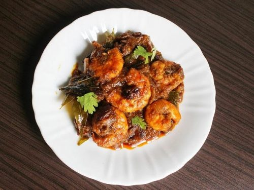

Ingredients
- Prawns (shrimp): 500 grams, cleaned and deveined
- Onions: 2 medium, finely chopped
- Tomatoes: 2 medium, finely chopped or pureed
- Garlic: 5 cloves, minced
- Ginger: 1-inch piece, minced
- Green chilies: 2, slit (optional)
- Coconut milk: 1 cup
- Tamarind pulp: 1 tablespoon (or a small lemon-sized ball of tamarind soaked in water)
- Turmeric powder: 1/2 teaspoon
- Red chili powder: 1 teaspoon
- Coriander powder: 2 teaspoons
- Cumin powder: 1 teaspoon
- Garam masala: 1/2 teaspoon
- Salt: to taste
- Oil: 3 tablespoons
- Fresh cilantro: for garnish
- Mustard seeds: 1 teaspoon
- Cumin seeds: 1 teaspoon
- Fenugreek seeds: 1/2 teaspoon
- Curry leaves: a few sprigs
Process
- step1:Clean and devein the prawns. Rinse them thoroughly and set aside.
- step2:Finely chop the onions and tomatoes (or puree the tomatoes if preferred).
- step3: Mince the garlic and ginger.
- step4: If using tamarind pulp, soak a small lemon-sized ball of tamarind in 1/2 cup of warm water for about 10 minutes.
- step5: Squeeze out the juice and discard the pulp.
- step6: In a bowl, mix the prawns with a pinch of turmeric powder and salt. Set aside for 15 minutes.
- step7: Heat the oil in a large pan or pot over medium heat.
- step8: If using, add the mustard seeds, cumin seeds, and fenugreek seeds. Let them splutter for a few seconds.
- step9: Add the curry leaves and sauté for a few seconds until fragrant.
- step10: Add the finely chopped onions and sauté until they turn golden brown.
- step11: Add the minced garlic, ginger, and slit green chilies. Sauté for another 2-3 minutes until fragrant.
- step12: Add the chopped or pureed tomatoes.
- step13: Cook until the tomatoes break down and the oil starts to separate from the mixture.
- step14:Add the turmeric powder, red chili powder, coriander powder, and cumin powder.
- step15: Sauté for a minute to let the spices bloom.
- step16:Add the tamarind pulp and mix well.
- step17: Pour in the coconut milk and bring the mixture to a gentle simmer.
- step18: Add the marinated prawns to the pan.
- step19: Cook for about 5-7 minutes, or until the prawns turn pink and are cooked through.
- step20: Be careful not to overcook the prawns as they can become tough and rubbery.
- step21: Add salt to taste and garam masala. Mix well and let the curry simmer for another 2 minutes.
- step22:Garnish with fresh cilantro.